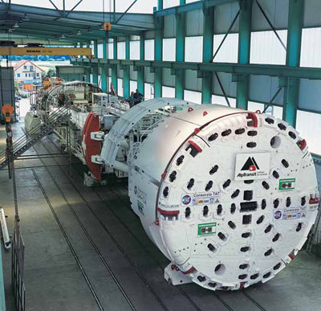

Bei Tunnelarbeiten treten zum Teil erhebliche Mengen von Feinstaub auf, der zusammen mit der Feuchtigkeit in elektrischen Anlagen und Geräten zu Gefahr bringenden Fehlern (z. B. Kriechströmen, Beeinträchtigungen der Schaltmechanik) führen kann.
Ausgewählte elektrische Anlagen und Betriebsmittel müssen deshalb einen besonderen Schutz gegen schädliche Staubablagerungen aufweisen, Mindestschutzart IP5X.
Ausgewählte elektrische Anlagen und Betriebsmittel müssen mindestens gegen Spritzwasser aus allen Richtungen geschützt sein, Mindestschutzart IPX4.
Muss mit Strahlwasser aus allen Richtungen oder Überflutung gerechnet werden, sind höhere Schutzarten erforderlich.
Aufgrund erhöhter mechanischer Beanspruchungen müssen elektrische Anlagen und Betriebsmittel entsprechend diesen Anforderungen ausgewählt oder durch sonstige Schutzmaßnahmen, z.B. Unterbringung in eigenen Betriebsräumen, durch Abdeckung oder Einhausung, gesichert werden.
Gase, die mit Luft ein explosives Gemisch ergeben, können
Vorhandensein und Konzentration explosionsgefährlicher Gase kann nur mit geeigneten Gasmess- und Gaswarngeräten festgestellt werden. Bei möglichem Auftreten explosionsgefährlicher Gase sind geeignete Maßnahmen durchzuführen, z.B. bewettern, vorwarnen, abschalten, verlassen des Gefahrenbereiches. In explosionsgefährdeten Bereichen sind zusätzliche Bestimmungen zu beachten (BetrSichV §§ 3-7, Anhang 3 und 4//.VEXAT).
Bei Störungen im Versorgungsnetz oder bei Unterbrechung der Stromversorgung können unter Umständen erhebliche Gefahren auftreten
Beispiele:
Um die Brandlast so gering wie möglich zu halten, müssen elektrische Anlagen und Betriebsmittel entsprechend den jeweiligen Anforderungen ausgewählt werden, z. B. schwerentflammbares und/oder halogenfreies Material, Gießharztransformatoren oder Transformatoren mit Silikonisolierflüssigkeit (siehe Abschnitt 4.1.2.2). Bei Auswahl der Standorte (z.B. der Transformatorstationen, Verteileranlagen) ist auf die uneingeschränkte Nutzungsmöglichkeit der Flucht- und Rettungswege zu achten.
Um die Funktionsfähigkeit leitungsgebundener sicherheitsrelevanter Systeme zu gewährleisten, müssen Materialien und Ausrüstungen mit zeitlich definiertem Funktionserhalt (z. B. EI* 30 - EI 90 bzw. REI* 30 - REI 90) verwendet werden.